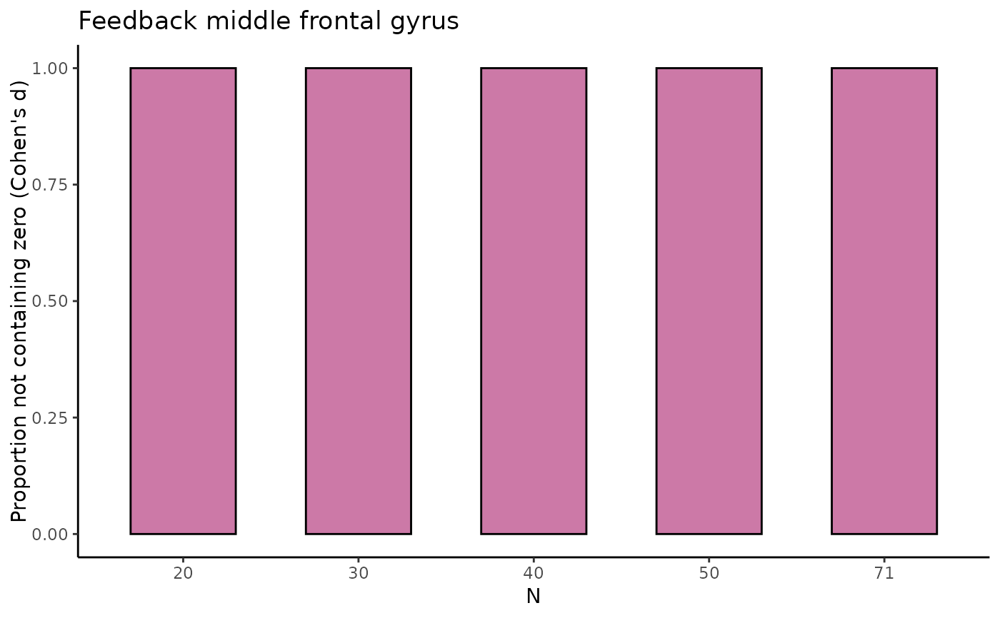
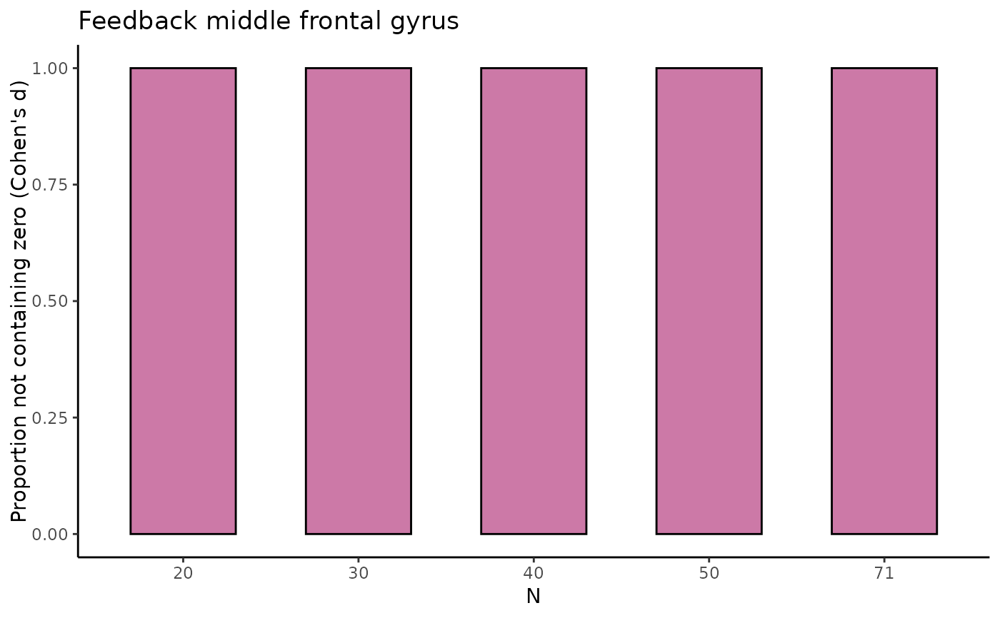

estim_diff determines point estimate, SD and SE, 95% Credibility Intervals,
and interval width, for both differences in raw means and Cohen's d's for
multiple sample sizes
Arguments
- data
Dataframe with the data to be analyzed
- vars_of_interest
Vector containing the names of the variables to be compared on their means:
c("var1", "var2")- sample_size
The range of sample size to be used
min:max- k
The number of permutations to be used for each sample size. Defaults to 50
- name
The title of the dataset or variables to be displayed with the figure. Defaults to
""
Value
tbl_selectreturns atibble::tibble()containing estimates of the difference in raw means and of Cohen's d with associated SD, SE, 95% CI, and width of the 95% CI (lower, upper) for five different sample sizes (starting with the minimum sample size, then 1/5th parts of the total dataset).fig_diffreturns a scatterplot for the difference in raw means, where for the five different sample sizes, 10 out of the total number of HDCI's computed are displayed (in light blue). The average estimate with credible interval summarizing the total number of HDCIs for each sample size are plotted in reddish purplefig_nozeroreturns a barplot where for each of the five sample sizes the proportion of permutations not containing zero is displayed for the difference in raw meansfig_cohens_dreturns a scatterplot for Cohen's d, where for the five different sample sizes, 10 out of the total number of HDCI's computed are displayed (in light blue). The average estimate with credible interval summarizing the total number of HDCIs for each sample size are plotted in reddish purplefig_d_nozeroreturns a barplot where for each of the five sample sizes the proportion of permutations not containing zero is displayed for Cohen's dtbl_totalreturns atibble::tibble()containing estimates of the difference in raw means and of Cohen's d with associated SD, SE, 95% CI, and width of the 95% CI (lower, upper) for all sample sizes, including the permutation number.
Examples
data_feedback <- feedback
estim_diff(data_feedback,
c("mfg_learning", "mfg_application"), 20:271,
10, "Feedback middle frontal gyrus")
#> $tbl_select
#> # A tibble: 55 × 13
#> N estimate variance stdev sterror lower upper cohens_d d_lower d_upper
#> <fct> <dbl> <dbl> <dbl> <dbl> <dbl> <dbl> <dbl> <dbl> <dbl>
#> 1 20 2.72 1.98 1.41 0.315 2.10 3.34 2.35 0.982 3.72
#> 2 70 3.07 2.48 1.57 0.188 2.70 3.44 1.97 1.60 2.34
#> 3 120 2.73 2.28 1.51 0.138 2.46 3.00 1.82 1.53 2.12
#> 4 170 2.81 2.15 1.47 0.112 2.59 3.03 1.94 1.73 2.15
#> 5 271 2.83 2.32 1.52 0.0925 2.65 3.01 1.87 1.72 2.03
#> 6 20 3.23 2.80 1.67 0.374 2.50 3.96 2.10 1.37 2.84
#> 7 70 2.83 2.07 1.44 0.172 2.50 3.17 1.99 1.52 2.46
#> 8 120 2.82 2.30 1.52 0.138 2.55 3.09 1.87 1.58 2.16
#> 9 170 2.82 2.39 1.54 0.118 2.59 3.05 1.83 1.64 2.03
#> 10 271 2.83 2.32 1.52 0.0925 2.65 3.01 1.87 1.70 2.04
#> # ℹ 45 more rows
#> # ℹ 3 more variables: permutation <fct>, nozero <dbl>, d_nozero <dbl>
#>
#> $fig_diff
 #>
#> $fig_nozero
#>
#> $fig_nozero
 #>
#> $fig_cohens_d
#>
#> $fig_cohens_d
 #>
#> $fig_d_nozero

#>
#> $tbl_total
#> # A tibble: 2,520 × 11
#> N estimate variance stdev sterror lower upper cohens_d d_lower d_upper
#> <int> <dbl> <dbl> <dbl> <dbl> <dbl> <dbl> <dbl> <dbl> <dbl>
#> 1 20 2.72 1.98 1.41 0.315 2.10 3.34 2.35 0.982 3.72
#> 2 21 2.75 2.88 1.70 0.370 2.02 3.47 1.67 0.956 2.38
#> 3 22 2.30 2.60 1.61 0.344 1.62 2.97 1.54 1.00 2.08
#> 4 23 2.97 2.62 1.62 0.337 2.31 3.63 1.90 1.15 2.64
#> 5 24 2.91 2.88 1.70 0.347 2.23 3.59 1.77 1.26 2.29
#> 6 25 2.69 2.17 1.47 0.295 2.11 3.27 1.91 1.41 2.40
#> 7 26 2.84 2.48 1.58 0.309 2.24 3.45 1.83 1.44 2.22
#> 8 27 3.13 2.15 1.47 0.282 2.58 3.68 2.19 1.64 2.74
#> 9 28 2.76 2.80 1.67 0.316 2.14 3.38 1.70 1.15 2.24
#> 10 29 2.83 2.82 1.68 0.312 2.22 3.45 1.75 1.10 2.40
#> # ℹ 2,510 more rows
#> # ℹ 1 more variable: permutation <int>
#>
#>
#> $fig_d_nozero

#>
#> $tbl_total
#> # A tibble: 2,520 × 11
#> N estimate variance stdev sterror lower upper cohens_d d_lower d_upper
#> <int> <dbl> <dbl> <dbl> <dbl> <dbl> <dbl> <dbl> <dbl> <dbl>
#> 1 20 2.72 1.98 1.41 0.315 2.10 3.34 2.35 0.982 3.72
#> 2 21 2.75 2.88 1.70 0.370 2.02 3.47 1.67 0.956 2.38
#> 3 22 2.30 2.60 1.61 0.344 1.62 2.97 1.54 1.00 2.08
#> 4 23 2.97 2.62 1.62 0.337 2.31 3.63 1.90 1.15 2.64
#> 5 24 2.91 2.88 1.70 0.347 2.23 3.59 1.77 1.26 2.29
#> 6 25 2.69 2.17 1.47 0.295 2.11 3.27 1.91 1.41 2.40
#> 7 26 2.84 2.48 1.58 0.309 2.24 3.45 1.83 1.44 2.22
#> 8 27 3.13 2.15 1.47 0.282 2.58 3.68 2.19 1.64 2.74
#> 9 28 2.76 2.80 1.67 0.316 2.14 3.38 1.70 1.15 2.24
#> 10 29 2.83 2.82 1.68 0.312 2.22 3.45 1.75 1.10 2.40
#> # ℹ 2,510 more rows
#> # ℹ 1 more variable: permutation <int>
#>